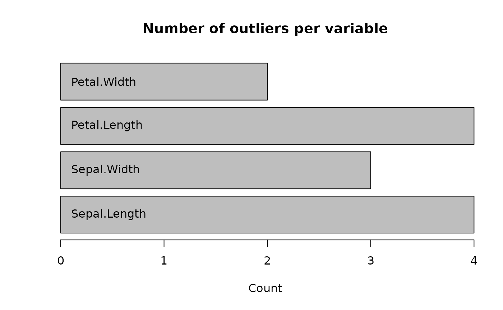

This function provides a random forest based implementation of the method described in Chapter 7.1.2 ("Regression Model Based Anomaly detection") of Chandola et al. Each numeric variable to be checked for outliers is regressed onto all other variables using a random forest. If the scaled absolute difference between observed value and out-of-bag prediction is larger than some predefined threshold (default is 3), then a value is considered an outlier, see Details below. After identification of outliers, they can be replaced, e.g., by predictive mean matching from the non-outliers.
outForest(
data,
formula = . ~ .,
replace = c("pmm", "predictions", "NA", "no"),
pmm.k = 3L,
threshold = 3,
max_n_outliers = Inf,
max_prop_outliers = 1,
min.node.size = 40L,
allow_predictions = FALSE,
impute_multivariate = TRUE,
impute_multivariate_control = list(pmm.k = 3L, num.trees = 50L, maxiter = 3L),
seed = NULL,
verbose = 1,
...
)A data.frame to be assessed for numeric outliers.
A two-sided formula specifying variables to be checked
(left hand side) and variables used to check (right hand side).
Defaults to . ~ ., i.e., use all variables to check all (numeric) variables.
Should outliers be replaced via predictive mean matching "pmm"
(default), by "predictions", or by NA ("NA").
Use "no" to keep outliers as they are.
For replace = "pmm", from how many nearest OOB prediction neighbours
(from the original non-outliers) to sample?
Threshold above which an outlier score is considered an outlier. The default is 3.
Maximal number of outliers to identify.
Will be used in combination with threshold and max_prop_outliers.
Maximal relative count of outliers.
Will be used in combination with threshold and max_n_outliers.
Minimal node size of the random forests. With 40, the value is relatively high. This reduces the impact of outliers.
Should the resulting "outForest" object be applied to
new data? Default is FALSE.
If TRUE (default), missing values are imputed
by missRanger::missRanger(). Otherwise, by univariate sampling.
Parameters passed to missRanger::missRanger()
(only if data contains missing values).
Integer random seed.
Controls how much outliers is printed to screen. 0 to print nothing, 1 prints information.
Arguments passed to ranger::ranger(). If the data set is large, use
less trees (e.g. num.trees = 20) and/or a low value of mtry.
An object of class "outForest" and a list with the following elements.
Data: Original data set in unchanged row order but optionally with
outliers replaced. Can be extracted with the Data() function.
outliers: Compact representation of outliers, for details see the outliers()
function used to extract them.
n_outliers: Number of outliers per v.
is_outlier: Logical matrix with outlier status.
NULL if allow_predictions = FALSE.
predData: data.frame with OOB predictions.
NULL if allow_predictions = FALSE.
allow_predictions: Same as allow_predictions.
v: Variables checked.
threshold: The threshold used.
rmse: Named vector of RMSEs of the random forests. Used for scaling the
difference between observed values and predicted.
forests: Named list of fitted random forests.
NULL if allow_predictions = FALSE.
used_to_check: Variables used for checking v.
mu: Named vector of sample means of the original v (incl. outliers).
The method can be viewed as a multivariate extension of a basic univariate outlier
detection method where a value is considered an outlier if it is more than, e.g.,
three times the standard deviation away from its mean. In the multivariate case,
instead of comparing a value with the overall mean, rather the difference to the
conditional mean is considered. outForest() estimates this conditional
mean by a random forest. If the method is trained on a reference data with option
allow_predictions = TRUE, it can even be applied to new data.
The outlier score of the ith value \(x_{ij}\) of the jth variable is defined as \(s_{ij} = (x_{ij} - p_{ij}) / \textrm{rmse}_j\), where \(p_{ij}\) is the corresponding out-of-bag prediction of the jth random forest and \(\textrm{rmse}_j\) its RMSE. If \(|s_{ij}| > L\) with threshold \(L\), then \(x_{ij}\) is considered an outlier.
For large data sets, just by chance, many values can surpass the default threshold
of 3. To reduce the number of outliers, the threshold can be increased.
Alternatively, the number of outliers can be limited by the two arguments
max_n_outliers and max_prop_outliers. For instance, if at most ten outliers
are to be identified, set max_n_outliers = 10.
Since the random forest algorithm "ranger" does not allow for missing values, any missing value is first being imputed by chained random forests.
Chandola V., Banerjee A., and Kumar V. (2009). Anomaly detection: A survey. ACM Comput. Surv. 41, 3, Article 15 <dx.doi.org/10.1145/1541880.1541882>.
Wright, M. N. & Ziegler, A. (2016). ranger: A Fast Implementation of Random Forests for High Dimensional Data in C++ and R. Journal of Statistical Software, in press. <arxiv.org/abs/1508.04409>.
head(irisWithOut <- generateOutliers(iris, seed = 345))
#> Sepal.Length Sepal.Width Petal.Length Petal.Width Species
#> 1 5.1 3.5 1.4 0.2 setosa
#> 2 4.9 3.0 1.4 0.2 setosa
#> 3 4.7 3.2 1.3 0.2 setosa
#> 4 4.6 3.1 1.5 0.2 setosa
#> 5 5.0 3.6 1.4 0.2 setosa
#> 6 5.4 3.9 1.7 0.4 setosa
(out <- outForest(irisWithOut))
#>
#> Outlier identification by random forests
#>
#> Variables to check: Sepal.Length, Sepal.Width, Petal.Length, Petal.Width
#> Variables used to check: Sepal.Length, Sepal.Width, Petal.Length, Petal.Width, Species
#>
#> Checking: Sepal.Length Sepal.Width Petal.Length Petal.Width
#> I am an object of class(es) outForest and list
#>
#> The following number of outliers have been identified:
#>
#> Number of outliers
#> Sepal.Length 4
#> Sepal.Width 3
#> Petal.Length 4
#> Petal.Width 2
outliers(out)
#> row col observed predicted rmse score threshold
#> 5 34 Sepal.Width -8.049668 3.52262141 1.236004 -9.362667 3
#> 13 137 Petal.Width -11.414393 1.92692803 1.477561 -9.029287 3
#> 8 14 Petal.Length 20.118421 0.44364273 3.036131 6.480213 3
#> 4 144 Sepal.Length -7.694186 6.03453851 2.265894 -6.058855 3
#> 1 16 Sepal.Length 18.192743 5.02003503 2.265894 5.813470 3
#> 10 144 Petal.Length -11.435635 5.54842165 3.036131 -5.593980 3
#> 2 40 Sepal.Length -7.414174 5.00302348 2.265894 -5.480043 3
#> 3 135 Sepal.Length 18.474192 6.20237447 2.265894 5.415883 3
#> 11 145 Petal.Length -10.274621 5.27119073 3.036131 -5.120270 3
#> 12 7 Petal.Width -7.038319 0.04314408 1.477561 -4.792670 3
#> 9 33 Petal.Length -9.622427 2.00996334 3.036131 -3.831320 3
#> 7 145 Sepal.Width 6.519407 2.39920688 1.236004 3.333485 3
#> 6 67 Sepal.Width 6.839742 2.83756540 1.236004 3.237998 3
#> replacement
#> 5 3.700000
#> 13 1.900000
#> 8 1.500000
#> 4 6.300000
#> 1 4.900000
#> 10 5.300000
#> 2 4.900000
#> 3 6.200000
#> 11 5.100000
#> 12 0.200000
#> 9 -6.769464
#> 7 2.500000
#> 6 2.900000
head(Data(out))
#> Sepal.Length Sepal.Width Petal.Length Petal.Width Species
#> 1 5.1 3.5 1.4 0.2 setosa
#> 2 4.9 3.0 1.4 0.2 setosa
#> 3 4.7 3.2 1.3 0.2 setosa
#> 4 4.6 3.1 1.5 0.2 setosa
#> 5 5.0 3.6 1.4 0.2 setosa
#> 6 5.4 3.9 1.7 0.4 setosa
plot(out)

plot(out, what = "scores")